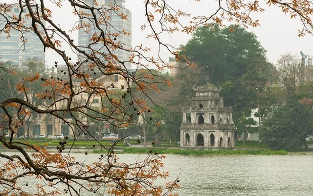

Đã là người Việt Nam, chắc chắn, ai cũng có một niềm tự hào sâu sắc về Hà Nội. Mỗi người Việt đều thể hiện tình yêu với Hà Nội theo một cách riêng, song với người nghệ sĩ thì tình yêu ấy được bộc lộ qua những tác phẩm nghệ thuật, mà ở bài này, chúng tôi dành riêng cho việc nói về Hà Nội trong thơ, theo một dòng chảy từ truyền thống tới hiện đại.
1. Không biết tự bao giờ, Hà Nội đã đi vào nhiều bài ca dao. Ở đó, đất kinh kỳ hiện lên trong vẻ đẹp của sự sống động, từ con người tới phố phường, danh lam thắng cảnh, các di tích văn hóa, sản vật, ẩm thực: “Dưa La, húng Láng, ngổ Đầm/ Cá rô đầm Sét, sâm cầm Hồ Tây”. Bài ca dao Hà Nội 36 phố phường trở thành niềm tự hào chung của người Việt Nam: “Rủ nhau chơi khắp Long thành/ Ba mươi sáu phố rành rành chẳng sai/Hàng Bồ, Hàng Bạc, Hàng Gai/ Hàng Buồm, Hàng Thiếc, Hàng Hài, Hàng Khay/Mã Vĩ, Hàng Điếu, Hàng Giày/Hàng Lờ, Hàng Cót, Hàng Mây, Hàng Đàn (…) Người về nhớ cảnh ngẩn ngơ/Bút hoa xin chép nên thơ lưu truyền”.
Không chỉ tự hào về vẻ đẹp phố phường, người Hà Nội còn tự hào về cốt cách riêng của mình: “Chẳng thơm cũng thể hoa nhài/Dẫu không thanh lịch cũng người Tràng An”. Có những thi phẩm vốn ban đầu xác định được danh tính người viết rõ ràng, nhưng với một sức lan tỏa và cuốn hút rộng rãi, nó đã trở thành tài sản chung của nhân dân và được người Việt coi đó là ca dao. Bài thơ của Dương Khuê chính là một trong những trường hợp như vậy: “Gió đưa cành trúc la đà/Tiếng chuông Trấn Vũ, canh gà Thọ Xương/ Mịt mù khói tỏa ngàn sương/ Nhịp chày Yên Thái mặt gương Tây Hồ”…
Tình yêu đôi lứa cũng gắn với những địa danh thuộc Hà Nội: “Ước gì anh lấy được nàng/ Để anh mua gạch Bát Tràng về xây/ Xây dọc rồi lại xây ngang/ Xây hồ bán nguyệt cho nàng rửa chân”…

2. Trước khi mang tên Hà Nội, thủ đô đã trải qua các tên gọi: Thăng Long (1010 - 1399), Đông Đô (1400 - 1406), Đông Quan (1407 - 1428), Đông Kinh (1430 - 1786). Trong thi ca Việt Nam thời trung đại, Thăng Long là cái tên được nhắc đến nhiều hơn cả và thậm chí đã trở thành biểu tượng về một thời kỳ phồn thịnh, vàng son của dân tộc, gắn với hai triều đại Lý - Trần kéo dài gần 4 thế kỷ với nhiều thành tựu, chiến công rực rỡ.
Một loạt thi phẩm của các danh gia giai đoạn nửa cuối thế kỷ XVIII - nửa đầu thế kỷ XIX đều sử dụng địa danh Thăng Long như hồi ức về một thời kỳ không thể nào quên. Một trong những thi phẩm nổi tiếng nhất của Bà huyện Thanh Quan có ngay hai chữ Thăng Long từ nhan đề - Thăng Long thành hoài cổ - với những lời thơ day dứt, đầy hoài niệm tiếc nuối: “Lối xưa xe ngựa hồn thu thảo/ Nền cũ lâu đài bóng tịch dương”.
Đại thi hào Nguyễn Du cũng có một chùm hai bài thơ mang tên Thăng Long với những câu: “Tản Lĩnh Lô Giang tuế tuế đồng/ Bạch đầu do đắc kiến Thăng Long” (Núi Tản, sông Lô dạo khắp vùng/ Bạc đầu còn được thấy Thăng Long) và “Cổ thời minh nguyệt chiếu tân thành/ Do thị Thăng Long cựu đế kinh” (Tân thành trăng cũ sáng ngời soi/ Thăng Long kinh cũ trải bao đời). Cao Bá Quát thì có bài thơ mang tựa đề Thăng Long thành lãm thắng hữu cảm (Cảm xúc khi lên thành Thăng Long ngắm cảnh) cũng với niềm hoài niệm mênh mang: “Bậc nhất phồn hoa kinh khuyết cũ/ Cao sâu Nùng, Nhị vẫn sơn hà/Thành trì trơ mấy hồi kim cổ/Phường phố thay bao lớp trẻ già”… (Hoàng Tạo dịch)
Sang đến thế kỷ XX, vẫn còn những bài thơ nổi tiếng sử dụng địa danh Thăng Long. Thi phẩm đề đời của tướng Huỳnh Văn Nghệ với hai câu tuyệt tác đã in sâu vào tâm hồn bao thế hệ: “Từ thuở mang gươm đi mở cõi/ Trời Nam thương nhớ đất Thăng Long” (Nhớ Bắc).
Nhà thơ Đỗ Trung Lai trong những năm đầu của thế kỷ XXI đã viết bài thơ Thăng Long (13 khổ, mỗi khổ 4 câu 5 chữ) với điệp khúc “Có một Thăng Long” trở đi trở lại trong câu thứ nhất và câu thứ ba mỗi khổ, tạo thành một điểm nhấn đặc biệt cho toàn thi phẩm: “Có một Thăng Long huyền thoại/ Rồng lên từ phía sông Hồng/ Có một Thăng Long áo mỏng/ Gió đùa quanh tấm lưng ong/ Có một Thăng Long sát thát/ Tinh kỳ rợp Đông Bộ Đầu/ Có một Thăng Long thơm ngát/ Mặt hoa nồng nàn đêm sâu”. Hào hùng và hào hoa như hai phẩm chất song hành sóng đôi trong từng khổ thơ, khiến bài thơ cất cánh bay lên.
3. Sang thời kỳ 1945 - 1975, hiện lên hình ảnh của một Hà Nội kháng chiến với rất nhiều cung bậc cảm xúc. Thời kỳ chống Pháp, có không ít những câu thơ lãng mạn hào hoa: “Đêm Hà Nội buốt tê/ Mái buồn nghe sấu rụng” (Chính Hữu), “Sáng chớm lạnh trong lòng Hà Nội/ Những phố dài xao xác hơi may/Người ra đi đầu không ngoảnh lại/ Sau lưng thềm nắng lá rơi đầy” (Đất nước - Nguyễn Đình Thi). Nhưng cùng với lãng mạn hào hoa còn có cả một Hà Nội rực lửa kháng chiến, một Hà Nội quyết tử cho tổ quốc quyết sinh: “Thôi nhé miền xuôi thôi tạm biệt/ Cống Chéo, Đồng Xuân thề một chết/Hàng Gai tay bỏng trục ba càng/Đất cũ Thăng Long người lẫm liệt” (Những làng đi qua - Quang Dũng), “Trước đau thương Hà Nội không buồn/ Hà Nội rắn như thanh sắt nguội (…) Ta mang ba mươi sáu phố phường đi kháng chiến/ Chín năm rừng lòng vẫn thủ đô” (Nhớ ngày thủ đô kháng chiến - Hoài Anh). Cái hào khí đánh giặc ấy phải chăng đã được hun đúc từ những áng thơ thời Trần: “Đoạt sóc Chương Dương độ/ Cầm Hồ Hàm Tử quan/ Thái bình tu trí lực/ Vạn cổ thử giang san” (Tụng giá hoàn kinh sư - Trần Quang Khải).
Thời chống Mỹ, không thể không nhắc đến trường ca nổi tiếng Em ơi Hà Nội phố gồm 23 khúc của nhà thơ Phan Vũ, viết năm 1972, trong những ngày cả Hà Nội làm cuộc Điện Biên Phủ trên không chống lại đế quốc Mỹ. Gần 500 dòng thơ khắc khoải, đắm say, xa xót, nghẹn ngào đã mang đến cho người đọc một Hà Nội với bao nỗi niềm, như thể ngàn năm cùng đọng lại trong một khoảnh khắc. Hà Nội vừa đẹp dịu dàng của những hẹn thề thiêng liêng long lanh ký ức, Hà Nội vừa buồn thương của những biệt ly chưa hẹn ngày trở lại, Hà Nội có những mất mát không gì bù đắp nổi như những vết thương nhức nhối muôn đời: “Em ơi Hà Nội phố/ Ta còn em mùi hoàng lan/ Ta còn em mùi hoa sữa/ Tiếng giày ai gõ nhịp đường khuya/ Cọt kẹt bước chân quen/ Thang gác thời gian/ Mòn thang gỗ/ Ngôi sao lẻ lạc vào căn xép nhỏ (…) Tháng Chạp/ Đôi tân hôn chưa kịp nằm chiếu hoa/ Đã có tên trong vòng hoa tưởng niệm/ Một tháng Chạp/ Trắng khăn xô, khói hương dài theo phố/ Một tháng Chạp/ Thâu đêm/ Mẹ thức hóa vàng”…
Nhưng Hà Nội anh hùng bất khuất đã kiên cường vượt qua mọi khó khăn gian khổ để chiến đấu và chiến thắng. Nhà thơ người dân tộc Dao - Bàn Tài Đoàn đã có những câu thơ thật mộc mạc mà tha thiết như tiếng reo vui tự hào cất lên rất đỗi tự nhiên: “Súng sẵn trong tay chờ giặc đến/ Giặc đến lúc nào, súng nổ vang/ Súng to, súng nhỏ tranh nhau nổ/ Nghe như pháo Tết đón xuân sang…/ Hà Nội hôm nay lại thắng lớn/ Tin vui vang dội khắp bốn phương/ Rừng núi ta nghe lòng vui sướng/ Thật là Hà Nội đất anh hùng” (Hà Nội đất anh hùng).
4. Sau 1975 cho tới nay, Hà Nội trở về với thời bình, gắn với những câu chuyện, cảm xúc, tâm sự riêng của từng cá nhân. Và chỉ có sự chân thành trong tình yêu Hà Nội là nguồn cơn duy nhất khiến những bài thơ, câu thơ lưu luyến mãi trong lòng người đọc. Có những bài thơ, câu thơ không có từ Hà Nội nào nhưng vẫn đầy ắp vẻ đẹp và hồn cốt của Hà Nội: “Trong thành phố có một vườn cây mát/ Trong triệu người có em của ta/ Buổi trưa nắng bầy ong đi kiếm mật/ Vào vườn rồi ong chẳng nhớ lối ra” (Vườn trong phố - Lưu Quang Vũ), “Ở một góc phố nào đôi mắt ấy nhìn ra/ Em đi qua và thế thôi cũng đủ” (Đôi mắt anh nhìn - Lữ Huy Nguyên). Có những bài thơ vỏn vẹn bốn câu, chỉ mang một chữ “phố” duy nhất mà đọc lên vẫn thấy thăm thẳm ắp đầy một Hà Nội trong vùng ký ức thanh xuân: “Anh tìm về địa chỉ tuổi thơ/Nhà số lẻ phố trò chơi bỏ dở/Mộng anh hường tìm môi em bói đỏ/Giàn trầu già khua những át cơ rơi”… (Át cơ - Lê Đạt).
Có một Hà Nội gắn với những mối tình đầu không thể nguôi quên trong trái tim mỗi người, có cả một Hà Nội gắn với ân tình bao bạn bè một thuở: “Cây đại già làm một chứng nhân/Số nhà các anh chúng tôi đến ở/Căn phòng cũ mấy lần thay ổ khóa/ Trái tim các anh vùi dưới đất rừng không hóa đá/ Trái tim đập phập phồng trên trang sách chẳng bình yên” (Hà Nội chiều nay - Nguyễn Đức Mậu).
Nếu có một lý do khiến bàn chân phải rời xa Hà Nội thì cảm xúc bao giờ cũng là những quyến luyến không nguôi, giây phút bước chân đi cũng là khi thầm nhủ trong lòng một ngày về: “Em xao xuyến trong lòng/Nhớ về nơi ta ở/ Mùa thu vàng đường phố/ Lá bay đầy lối qua/ Ngọn đèn và trang thơ/ Tiếng thở đều con nhỏ/ Màu hoa trên cửa sổ/ Quán nước chè mùa đông/ Con tàu với dòng sông/ Ra đi và trở lại/ Hà Nội ơi Hà Nội/ Sân ga chiều em đi” (Sân ga chiều em đi - Xuân Quỳnh).
Chẳng phải phải ngẫu nhiên mà một loạt bài thơ về Hà Nội đều được các nhạc sĩ phổ nhạc thành những ca khúc nổi tiếng, đi vào lòng công chúng, chắp thêm một đời sống nữa cho tác phẩm. Có thể kể đến các ca khúc Hà Nội ngày trở về (Phú Quang phổ thơ Thanh Tùng), Tôi muốn mang Hồ Gươm đi (Phú Quang phổ thơ Trần Mạnh Hảo), Có phải em mùa thu Hà Nội (Trần Quang Lộc phổ thơ Tô Như Châu), Hà Nội mùa này vắng những cơn mưa (Trương Quý Hải phổ thơ Bùi Thanh Tuấn), đều đã chứng tỏ được sức sống bền bỉ của mình qua thử thách thời gian…
Những cây bút thuộc thế hệ 7X, 8X vẫn tiếp tục viết về Hà Nội với nhiều mê đắm. Tập Nhiên sơ (NXB Văn học, 2011) của Đặng Hà My có 46 bài thì đã có tới hơn một phần ba trong số đó viết về Hà Nội hoặc có những câu thơ về Hà Nội. Nỗi nhớ của người con gái sinh ra và lớn lên ở Hà Nội, nay phải bôn ba nơi góc bể chân trời dễ khiến bất cứ ai trong chúng ta nao lòng: “Em chưa thể cùng anh về với biển/ Bởi nơi em chưa dịu sóng Tây Hồ/ Cát nơi ấy trùng khơi nơi ấy/ Em mang về vời vợi chiết vào thơ/ Chẳng có ngôi sao nào giấu được vào tay áo/ Cho thiên đường thơm thảo giấc yêu/ Em vẫn thế nghiêng mây đường Yên Phụ/ Ươm vu vơ tóc hương ngát mây chiều” (Nghiêng xuống Tây Hồ).
Phải yêu Hà Nội thế nào, phải yêu sông Hồng biết bao nhiêu, Vi Thùy Linh mới viết được những câu thơ thế này, mang trong đó không ít nhưng lo lắng về sự tác động của đô thị hiện đại đến vẻ đẹp tự nhiên có tự ngàn đời: “Ngồi trên bờ cao nhìn sông Hồng thở/Rặng liễu bơ phờ chìa vôi ngái ngủ/Buồn ơi những chiều đò dọc, xà lan/Sành, gốm, cát, than đi về hoang mang/Sông ngày một cạn, hẹp lại hai bờ/Còn đâu hướng gió cho thuyền lên thơ” (Thương sông Hồng).
Nhưng tôi tin rằng, mỗi con người bằng tình yêu với Hà Nội, tình yêu với từng góc phố, mỗi ngôi nhà sẽ có cách giữ gìn Hà Nội cho riêng mình. Tình yêu với Hà Nội sẽ luôn là một dòng chảy, một đồng vọng, một nối tiếp qua nhiều thế hệ, qua bao đôi lứa, qua bao trái tim, như những gì mà Đinh Vũ Hoàng Nguyên đã nói giùm chúng ta: “Ta bên nhau trên phố của bao người/ Bao ân tình vừa đi qua phố/ Có một phố vừa đi qua phố/ Có một người lắng phố, bên em/ Em hồn nhiên cho phố hồn nhiên/ Tóc phả mái bên chiều phai phai nắng ngói…/Thân thương quá! Lòng sao chợt hỏi/ Phố của mình có nối… phố trong em” (Có một phố vừa đi qua phố). Hay như thi sĩ Bằng Việt đã hơn một lần khẳng định: “Dù nhiều điều tôi nhớ tôi quên/ Nhưng Hà Nội trong tôi là vĩnh viễn” (Trở lại trái tim mình).
Bảo tàng Văn học Việt Nam